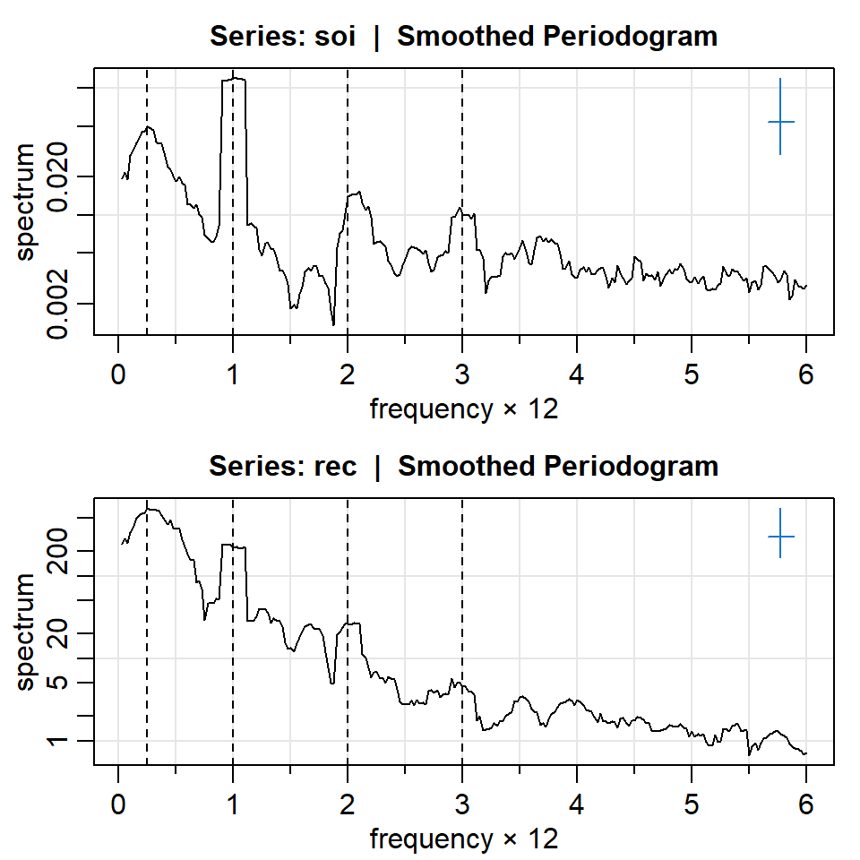

![]()
Daniell(4)
coef[-4] = 0.1111
coef[-3] = 0.1111
coef[-2] = 0.1111
coef[-1] = 0.1111
coef[ 0] = 0.1111
coef[ 1] = 0.1111
coef[ 2] = 0.1111
coef[ 3] = 0.1111
coef[ 4] = 0.1111Tema 1: Análisis espectral de series temporales(4)
Estimación espectral no paramétrica
Contenido
Estimación espectral no paramétrica
Estimación espectral no paramétrica (extensión)
Estimación espectral paramétrica
Estimación espectral no paramétrica
Para introducir la estimación espectral no paramétrica, es necesario definir el concepto de una banda en el dominio de frecuencia \(\mathcal{B}\), de \(L \ll T\) contiguas frecuencias fundamentales, que estén centrado alrededor de la frecuencia de interés \(\omega_j=\frac{j}{T}\) (cercano a \(\omega\) de interés).
Para frecuencias de la forma \(\omega^*=w_j+\frac{k}{T}\), sea
\[\mathcal{B} = \left\lbrace \omega^*: \omega_j-\frac{m}{T} \leq \omega^* \leq \omega_j+\frac{m}{T}\right\rbrace,\] donde \(L=2m+1\) (número impar), selecionado de tal forma que el valor espectral en el intervalo \(\mathcal{B}\) \[f\left(\omega_j+\frac{k}{T}\right),~~k=-m,...,0,...,m.\] sea similar a \(f(\omega)\).
- Podemos definir el periodograma suavizado (promediado) como:
\[\bar{f}(\omega)=\frac{1}{L}\sum_{k=-m}^{m}I\left(\omega_j+\frac{k}{T}\right).\]
- Bajo ciertas condiciones de regularidad, se puede obtener resultados asintóticos similares a propiedades de la distribución del periodograma (no suavizado), i.e. cuando \(T \rightarrow \infty\),
\[\frac{2 L~ \bar{f}(\omega)}{f(\omega)} \rightarrow \chi^2_{2L}.\]
Note que las bandas de frecuencias \(\mathcal{B}\) tienen tamaño \(B=\frac{L}{T}\).
Finalmente, se puede construir un intervalo de confianza de \(100(1-\alpha)\%\), con \[\frac{2L \bar{f}(\omega)}{\chi^2_{2L}(1-\alpha/2)}<f(\omega)<\frac{2L \bar{f}(\omega)}{\chi^2_{2L}(\alpha/2)}.\]
Debido a la asimetría de la distribución del periodograma, se puede utilizar el logarítmo del espectro para facilitar la visualización.
Es decir, se puede construir un intervalo de confianza de \(100(1-\alpha)\%\) con escala logarítmica, usando \[\left[ \log \bar{f}(\omega)+a_L~,~\log \bar{f}(\omega) + b_L \right]\] donde
\(a_L = \log 2L - \log \chi^2_{2L} (1-\alpha/2)\) y
\(b_L = \log 2L - \log \chi^2_{2L} (\alpha/2)\).
- Si \(L\) es muy cercano a cero, puede producir problema en la computación. Se utiliza una aproximación reemplazando \(2L\) por \(2Ln/n'\). De esta forma, se define los grados de libertad ajustados como \[df=\frac{2Ln}{n'}\]
- Finalmente, el intervalo de confianza de \(100(1-\alpha)\%\) queda: \[\frac{df~ \bar{f}(\omega)}{\chi^2_{df}(1-\alpha/2)}<f(\omega)<\frac{df~ \bar{f}(\omega)}{\chi^2_{df}(\alpha/2)}.\]
Núcleo de Danniell
Más adelante, veremos que “promediando” las frecuencias de una banda se trata del uso del núcleo de Danniell.
Utilizando \(m=4\) y \(L=2m+1=9\) como ejemplo:
Ejemplo: SOI y reclutamiento
Espectro
Bandwidth: 0.225 | Degrees of Freedom: 16.99 | split taper: 0% - Al igual que el periodograma no suavizado, los picos principales son de las frecuencias:
- \(\omega=1/4\Delta=1/48\) ciclos por mes (4 años), y
- \(\omega=1\Delta=1/12\) ciclos por mes (anual).
- Note que hay picos sucesivos en las frecuencias \(k\omega\), \(k=2,3\). Esto es debido a la presencia de componentes periódicos no sinusoidal.
- Ejercicio: Interprete el espectro de REC.
El intervalo de confianza se obtiene a continuación:
[1] 0.04952026[1] 0.11908[1] 0.0279 0.1113[1] 0.0670 0.2677Espectro logarítmico
Bandwidth: 0.225 | Degrees of Freedom: 16.99 | split taper: 0% Bandwidth: 0.225 | Degrees of Freedom: 16.99 | split taper: 0% 
Nota
El ancho de la cruz representa el ancho de la banda y el largo representa el intervalo de confianza.
Se notan picos del periodograma en los múltiplos de \(\Delta\). Esto es debido a que el comportamiento cíclico no es sinusoidal perfecto.
Ejemplo: Armónicos
- Para ilustrar un comportamiento ciclico que no es sinusoidal, pero se puede formarlo con armónicas fundamentales.
- Considere \[x_t=\sin(2\pi2t)+0.5\sin(2\pi4t)\] \[+0.4\sin(2\pi6t)+0.3\sin(2\pi10t)\] \[+0.1\sin(2\pi12t)\]
- Esta función es periódica, pero no es sinusoidal.
Estimación espectral no paramétrica (extensión)
Contenido
Estimación espectral no paramétrica
Estimación espectral no paramétrica (extensión)
Estimación espectral paramétrica
Estimación espectral no paramétrica (extensión)
- Se puede extender el periodograma suavizado (promediado) con:
\[\hat{f}(\omega)=\sum_{k=-m}^{m} h_k I(\omega_j+k/T)\] donde los pesos \(h_k>0\) y cumple la condición \[\sum_{k=-m}^{m} h_k>0.\]
- Es posible obtener resultados asintóticos pero no vamos a entrar en detalles.
Alternativas de núcleos
- Una forma de crear pesos diferentes es repetir varias veces el núcleo de Daniell.
- Considere una secuencia de valores \(u_t\), el núcleo de Daniell con \(m=1\) es: \[\hat{u}_{t}=\frac{1}{3}u_{t-1}+\frac{1}{3}u_{t}+\frac{1}{3}u_{t+1}\]
- Aplicamos nuevamente el núcleo de Daniell con \(k=1\):
\[\hat{\hat{u}}_{t}=\frac{1}{3}\hat{u}_{t-1}+\frac{1}{3}\hat{u}_{t}+\frac{1}{3}\hat{u}_{t+1}\]
- Se obtiene
\[\hat{\hat{u}}_{t}=\frac{1}{9}u_{t-2}+\frac{2}{9}u_{t-1}+\frac{3}{9}u_{t}+\frac{2}{9}u_{t+1}+\frac{1}{9}u_{t+2}\]
- El núcleo (kernel) de Daniell modificado asigna mitad del peso en los extremos.
- Considere una secuencia de valores \(u_t\), el núcleo de Daniell modificado con \(m=1\) es: \[\hat{u}_{t}=\frac{1}{4}u_{t-1}+\frac{1}{2}u_{t}+\frac{1}{4}u_{t+1}\]
- Aplicamos nuevamente el núcleo de Daniell modificado con \(k=1\), se obtiene
\[\hat{\hat{u}}_{t}=\frac{1}{16}u_{t-2}+\frac{4}{16}u_{t-1}+\frac{6}{16}u_{t}+\frac{4}{16}u_{t+1}+\frac{1}{16}u_{t+2}\]
Ejemplo: SOI y reclutamiento
Aaplicando el núcleo (kernel) de Daniell modificado
Estimación espectral paramétrica
Contenido
Estimación espectral no paramétrica
Estimación espectral no paramétrica (extensión)
Estimación espectral paramétrica
Estimación espectral paramétrica
- Consiste en construir la función espectral utilizando las estimaciones de un modelo ARIMA(p,q).
- En la práctica, es común utilizar los criterios de información como AIC, AICc y BIC para seleccionar el mejor orden p de AR(p).
- A partir de las estimaciones, se calcula la densidad espectral utilizando:
\[\hat{f}_X(\omega)= \frac{\hat{\sigma}_w^2}{|\hat{\phi}(e^{-2 \pi i \omega})|^2}.\] donde \(\hat{\phi}(B)=1-\hat{\phi}_1 B -\hat{\phi}_2 B^2-...-\hat{\phi}_p B^p\).
Bajo condiciones \(p \rightarrow \infty, p^3/T \rightarrow 0\) cuando \(p,T \rightarrow \infty\), el intervalo de confianza de \(100(1-\alpha)\%\) queda: \[\frac{\hat{f}(\omega)}{1+C z_{\alpha/2}}<f_X(\omega)<\frac{\hat{f}(\omega)}{1-Cz_{\alpha/2}},\] donde \(C=\sqrt{2p/T}\) y \(z_{\alpha/2}\) es el percentil \(1-\alpha/2\) de la distribución normal estándar.
¿Por qué con AR(p)? La densidad espectral de cualquier proceso estacionario puede ser aproximado por la densidad espectral de AR(p) (ver Propiedad 4.7 de Shumway & Stoffer).
Ejemplo
- En R, el comando
spec.icescoge el mejor rezago de acuerdo a AIC.
ORDER AIC BIC
[1,] 0 272.69370 210.95532
[2,] 1 82.14840 24.52591
[3,] 2 84.14419 30.63759
[4,] 3 85.59263 36.20192
[5,] 4 80.47156 35.19675
[6,] 5 70.78220 29.62328 freq spec
[1,] 0.00000000 0.02544881
[2,] 0.01202405 0.02550050
[3,] 0.02404810 0.02565601
[4,] 0.03607214 0.02591669
[5,] 0.04809619 0.02628472
[6,] 0.06012024 0.02676306Bondad de ajuste de los modelos AR según el orden p basado en AIC y BIC
- En R, el comando
spec.icescoge el mejor rezago de acuerdo a AIC.
t AIC BIC
1 0 272.6937023 210.955320
2 1 82.1484043 24.525915
3 2 84.1441892 30.637592
4 3 85.5926277 36.201922
5 4 80.4715619 35.196749
6 5 70.7822012 29.623280
7 6 69.5898661 32.546837
8 7 71.5718647 38.644728
9 8 71.4320021 42.620757
10 9 63.2815353 38.586183
11 10 49.9872355 29.407775
12 11 40.7220194 24.258451
13 12 41.0928139 28.745138
14 13 37.0833413 28.851557
15 14 8.7779160 4.662024
16 15 0.0000000 0.000000
17 16 0.4321663 4.548058
18 17 0.8834736 9.115258
19 18 0.9605224 13.308199
20 19 2.9348253 19.398394
21 20 4.7475516 25.327012
22 21 6.7012637 31.396616
23 22 7.1553956 35.966641
24 23 4.6428297 37.569967
25 24 5.8610042 42.904033
26 25 6.5000325 47.658954
27 26 2.8918549 48.166668
28 27 4.2581518 53.648857
29 28 5.5960927 59.102690
30 29 6.3765400 63.999030
31 30 2.6978096 64.436191
32 31 4.6243480 70.478622
33 32 5.9246340 75.894800
34 33 7.6085953 81.694654
35 34 7.6354835 85.837434
36 35 4.8817282 87.199571
37 36 3.9962278 90.429962
38 37 5.9223121 96.471939
39 38 6.7647416 101.430260
40 39 3.8167034 102.598114
41 40 4.9371390 107.834442
42 41 6.9361882 113.949383
43 42 6.6242894 117.753377
44 43 8.5812482 123.826228
45 44 10.3970778 129.757949
46 45 12.2889991 135.765763
47 46 14.0998243 141.692480Paquetes en R
Para replicar los ejemplos de esta presentación, necesitan estos paquetes: